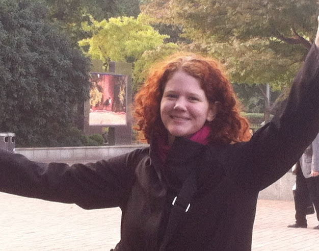

Quote: I am a curious, forever-learning problem solver, with a belief that we all can make the world a better place, so I'm trying to live up to that in my own small way.

Q: What is a regular work day like for you?
A: I try to leave one simple thing undone from the previous work day. When I arrive at work, I get in the groove by working on that thing first and refer to email, my calendar, and items on my work board. Our team has standup soon after, and I have, on average, one meeting per day. I try to protect blocks of 2-3 hours at a time for development.
Q: What do you love most about your career/major?
A: I love helping people. Sometimes work is 'work' because it's tedious. I love using my skills to automate processes that a computer is better at in order to free up time for the things people are better at - making connections, problem solving, helping others, forming relationships.
Q: What prepared you the best for your job/major today?
A: Most of my skills are self-taught, and I still think a drive to teach yourself is very important. Tech is a job where your skill in one language or application or product won't last very long. I was also very lucky to have the opportunity to attend Omaha Code School, where I filled in gaps in my knowledge, learned tools and best practices, and dove deep into a new skill set (web development). But you don't need a path like mine to be in tech.
Q: What is the biggest obstacle you've been faced with, and how are/did you overcoming/overcome it?
A: My biggest obstacle was my own self-doubt. Our culture has created a stereotype of the genius developer who saves the day by writing code 24 hours straight, one time (and it works forever, no bugs!), and the tech community can be alienating to newcomers, with its technical jargon and competitive spirit. I felt, especially being self-taught for a long time, like I must not belong in tech.
You can belong in tech if you don't look like the stereotypical programmer, or if you don't know all the technical words yet, or if you prefer to collaborate instead of compete.
I hope Girls Who Code and the Omaha tech community can be welcoming places for newcomers. And I feel more established developers have an obligation to make this happen. Because tech isn't just one industry, it is building the roads of our future. We need many different minds to help build it.
Q: What non-tech skill do you find most helpful/important that's for your career?
A: Empathy was a skill I learned in my previous non-tech job, but it has proved just as helpful in my job as a developer. Good code is written by people who understand the needs of the users, from the project owners to the end users to the future maintainers, and who can work with others to build that thing together. Tech is a team sport.
Q: What's your favorite coding language?
A: Ruby for its expressiveness, JavaScript for its versatility.
Q: What are some of your interests outside tech?
A: I love hiking in the Fontenelle Forest, visiting museums, examining historic textiles, and travelling to places where I've never been.
Q: What advice would you give a young person interested in tech now?
A: If it interests you, pursue it and keep going. Just like you keep debugging until your program finally works. And if you get stuck (because you will, many times), ask. Developers ask for help all the time because no one can know it all. Ask me, ask your friend, ask the internet. Ask.